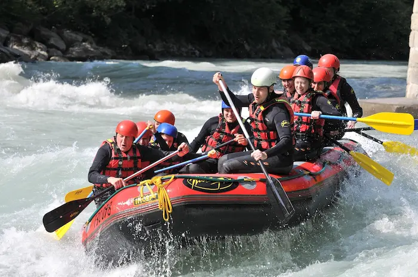
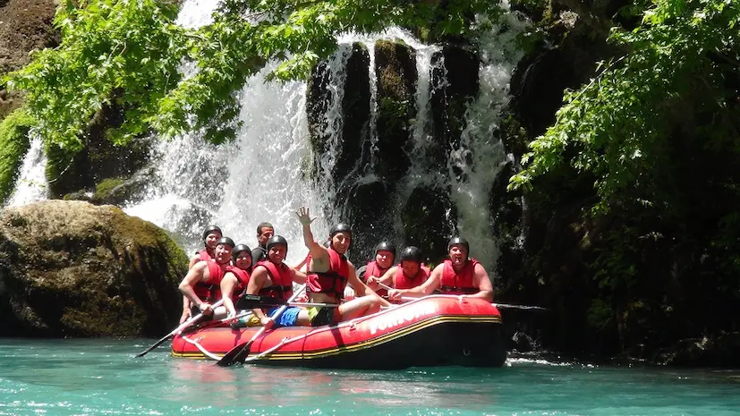
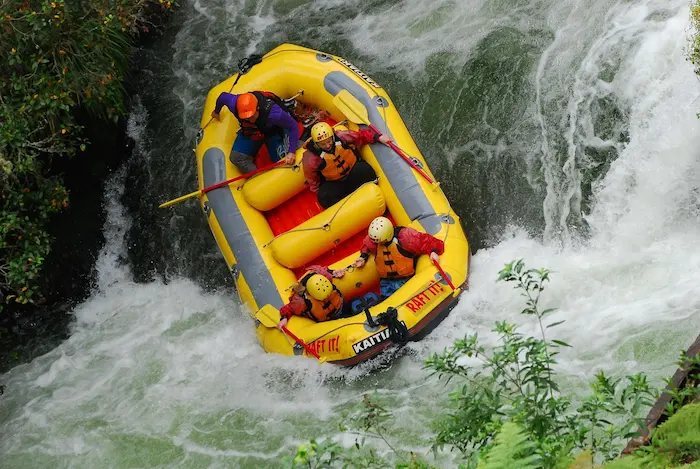

Full Steam Ahead has been a favorite for a long time. It features high speed currents, a few tight turns, and an area that you could even race another raft! This is for those who have the need for speed, enjoy a little competition, and those who are ready to charge through rough waters.

Mermaid's Cove is a scenic and peaceful adventure. You will find some rapids that lead you to a secret tunnel. This quiet course ends inside of a beautiful cove that is seemingly hidden from the rest of the world. Beginners, nature lovers, and all adventurers will love discovering the secret hidden in Mermaid's Cove.

The Edge is the the final destination. Once you go over, you will never be the same. This course features drops of varying sizes, navigation around large obstacles, and finishes off with a very large drop. This is not for the faint of heart. Those who are courageous, thrill seeking, and want a challenge will love traveling to The Edge!
Guides, PFDs, rafts, paddles, and safety equipment are provided on all of our adventures
Any further equipment such as wet suits and drybags can be rented here.
Adventures
| Trip | Details | Description | |
|---|---|---|---|
| Mermaid's Cove | Up to 3 hours, Class I and II rapids, areas to stop and swim, friendly for all ages | The journey will take you through some tight passages through trees, a calm open area, and a long tunnel under rock before finally arriving at Mermaid's Cove. There are only 2 ways to get to the cove. One is this peaceful adventure, the other requires one to travel to The Edge. | Book Now |
| Adventurer's Path | 3.5 hours, up to Class III rapids, a moderate difficulty suitable for ages 12 and up | You will travel along a wide path with large bends, frequent rapids, and eventually come full circle to finish where you started. | Book Now |
| Dip n Dive | 2.5 hours, Class II and III rapids, requires teamwork and navigating obstacles, suitable to those ages 14 and up. | You will travel along several areas with aggressive up and down movements. It will be as if going over small hills at a fast pace. There is an area to stop and swim around, as well as 3-6 foot drops. | Book Now |
| Full Steam Ahead | 1.5 hours, up to a Class IV rapid, requires following commands and quick reflexes, suitable for ages 16 and up | This adventure generally runs at around 8 mph, but at one point there is a decline in slope and a small island that splits the river in 2 temporarily right after a waterfall empties into it. This combination creates a situation where you could travel at speeds of 15 mph on either side of the fork. The fork comes back together after about 150 feet. Large groups that require multiple rafts love to use this place to race. Don't worry, our expert guides will make sure everything is done safely. | Book Now |
| The Edge | 2 hours, Class V rapid, requires significant Classes III and IV experience, large drops and high speeds, ages 18 and up | You will start out on the same path as Full Steam ahead. There is a fork that you will take that leads you to a slower and peaceful route. There are some significant rapids, then suddenly your speed will accelerate to around 10 mph. There are a few boulders to navigate around, and then you find The Edge. It is an 18 foot drop that lands in the middle of some trees and more boulders. After coming around another bend, you'll find yourself in Mermaid's Cove. | Book Now |